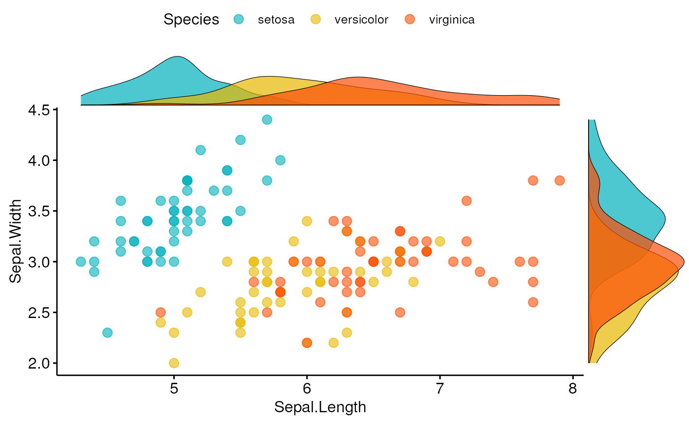

Scatter Plot with Marginal Histograms
Create a scatter plot with marginal histograms, density plots or box plots.
ggscatterhist(data, x, y, group = NULL, color = "black", fill = NA, palette = NULL, shape = 19, size = 2, linetype = "solid", bins = 30, margin.plot = c("density", "histogram", "boxplot"), margin.params = list(), margin.ggtheme = theme_void(), margin.space = FALSE, main.plot.size = 2, margin.plot.size = 1, title = NULL, xlab = NULL, ylab = NULL, legend = "top", ggtheme = theme_pubr(), ...)
Arguments
- data
- a data frame
- x
- x and y variables for drawing.
- y
- x and y variables for drawing.
- group
- a grouping variable. Change points color and shape by groups if
the options
colorandshapeare missing. Should be also specified when you want to create a marginal box plot that is grouped. - color
- point colors.
- fill
- point colors.
- palette
- the color palette to be used for coloring or filling by groups. Allowed values include "grey" for grey color palettes; brewer palettes e.g. "RdBu", "Blues", ...; or custom color palette e.g. c("blue", "red"); and scientific journal palettes from ggsci R package, e.g.: "npg", "aaas", "lancet", "jco", "ucscgb", "uchicago", "simpsons" and "rickandmorty".
- shape
- point shape. See
show_point_shapes. - size
- Numeric value (e.g.: size = 1). change the size of points and outlines.
- linetype
- line type ("solid", "dashed", ...)
- bins
- Number of histogram bins. Defaults to 30. Pick a better value that fit to your data.
- margin.plot
- the type of the marginal plot. Default is "hist".
- margin.params
- parameters to be applied to the marginal plots.
- margin.ggtheme
- the theme of the marginal plot. Default is
theme_void(). - margin.space
- logical value. If TRUE, adds space between the main plot and the marginal plot.
- main.plot.size
- the width of the main plot. Default is 2.
- margin.plot.size
- the width of the marginal plot. Default is 1.
- title
- plot main title.
- xlab
- character vector specifying x axis labels. Use xlab = FALSE to hide xlab.
- ylab
- character vector specifying y axis labels. Use ylab = FALSE to hide ylab.
- legend
- specify the legend position. Allowed values include: "top", "bottom", "left", "right".
- ggtheme
- the theme to be used for the scatter plot. Default is
theme_pubr(). - ...
- other arguments passed to the function
ggscatter().
Examples
# Basic scatter plot with marginal density plot ggscatterhist(iris, x = "Sepal.Length", y = "Sepal.Width", color = "#00AFBB", margin.params = list(fill = "lightgray"))# Grouped data ggscatterhist( iris, x = "Sepal.Length", y = "Sepal.Width", color = "Species", size = 3, alpha = 0.6, palette = c("#00AFBB", "#E7B800", "#FC4E07"), margin.params = list(fill = "Species", color = "black", size = 0.2) )# Use boxplot as marginal ggscatterhist( iris, x = "Sepal.Length", y = "Sepal.Width", color = "Species", size = 3, alpha = 0.6, palette = c("#00AFBB", "#E7B800", "#FC4E07"), margin.plot = "boxplot", ggtheme = theme_bw() )